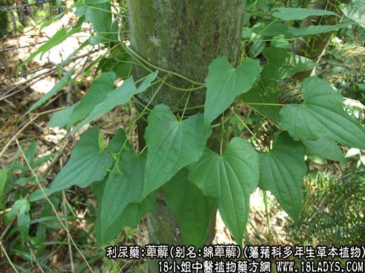
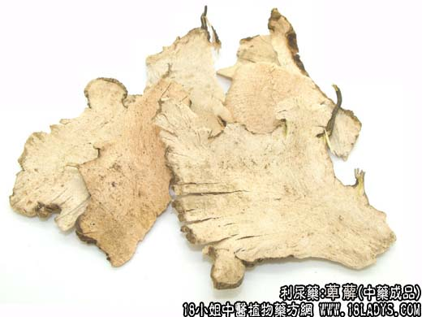
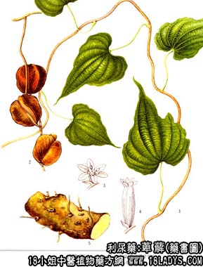

本品为较常用药，别名赤节。始终《名义别录》列为中品。《本草纲目》列入草部蔓草类，又名白菝葜。
来源：为薯蓣科多年生草本植物。绵萆薢，福州萆薢，粉背萆薢的干燥块茎。前两种为药材绵萆薢，后一种为药材粉萆薢。多在产地加工切皮。均为野生。
产地：主产于浙江、福建、广东、广西、四川以及江南各地均生产。
性状鉴别：绵萆薢：为规则的片状，厚约三毫米。片大小宽窄不一。周边外皮灰黄色，卷缩。切面白色或前黄白色，显粗糙，有筋脉点，质棉软轻泡，易折断，气无味微苦。以色白，棉软，整齐不碎者为佳。
粉萆薢：为不规则的薄片厚在一毫米一下，周边外皮褐色，凹凸弯曲，大小宽窄不一。切面白色或黄白色，有的有黄绿色圈斑。略显细腻平坦。质稍坚脆，有弹性，易折断。气无味微苦。以色白，片大较薄，有弹性者为佳。
主要成分：含暑蓣皂甙等多种甾体皂甙。总皂甙水解后生成薯蓣甙元。
功效与作用：祛风除湿，其原理尚待研究。
炮制：生用。
性味：苦甘，平。
归经：入肝、肾、胃经。
功能：利湿去浊，祛风除痹。
主治：淋浊白带、腰膝痹痛，湿热疮毒。
临床应用：1、用于治疗小便频数，小便失禁（尤其小儿）。配益智仁、乌药。
2、用于治疗膏淋（尿液混浊如膏，或如米汤，小便短涩，欲出未尽）。有湿热证候者（可见于急性尿道炎、膀胱炎），配车前子、黄柏等以加强祛湿清热作用，方如程氏薢分清饮；有阳虚肾虚证候者（可见于慢性前列腺炎、各种原因引起的乳糜尿等），配乌药、益智仁等，方如萆薢分清饮。
3、用于治疗湿热痹痛，尤其腰背冷痛、下肢活动不利、麻木（可见于周围神经炎、类风湿性关节炎）。前人的经验说萆薢“治湿最长，治风次之，治寒则尤其次”。对于湿热和风湿所致的肌痛，本品确有缓解功效、常配桑枝、络石藤、牛膝等药。
4、用于治疗皮肤湿疹、慢性皮炎，或脓疱疮等属湿热症者，配黄柏、苡仁等，方如萆薢祛湿汤。
用量：4.5～12g。大剂量可用至24～30g。
处方举例：1、程氏萆薢分清饮（《医学心悟》）：川萆薢9g，黄柏9g，石菖蒲4.5g，云芩12g，白术9g，莲子心6g，丹参4.5g，车前子12g（包煎），水煎服。
2、萆薢分清饮（杨氏方）：川萆薢9g，益智仁6g，乌药9g，石菖蒲4.5g，茯苓9g，生甘草3g，水煎服。
3、萆薢祛湿汤：川萆薢9g，黄柏9g，生苡仁15g，赤芍9g，丹皮9g，泽泻9g，生滑石12g，通草3g，水煎服。
注：1、萆薢来源复杂。李时珍谓：此有二种，茎有刺者根白实，无刺者根虚软。软者为胜，蔓生，叶似薯蓣。现市场上常见商品有三种，其中两种白色或黄白色一虚软，一略坚实。与李时珍所述相同，京津习用。
2、另有一种红萆薢，京津不用。主产四川省，据《四川中药志》记载为百合科菝葜属数种植物的块茎。原植物尚待进一步研究。商品为规则的乱切片，薄厚大小不一。周边外皮棕色弯曲不直。切面红褐色，中心有黄色粗纤维。体略轻、质硬易折断。气无味淡。
3、四川省内萆薢和土茯苓常相混用。
4、一般习惯认为萆薢微清苦。断面略显粗糙。少粉性。水湿后不产生粘滑感。土茯苓则味淡甜而不苦。断面略显细腻而无粗纤维组织，含粉性，水湿或水煮后粘滑。